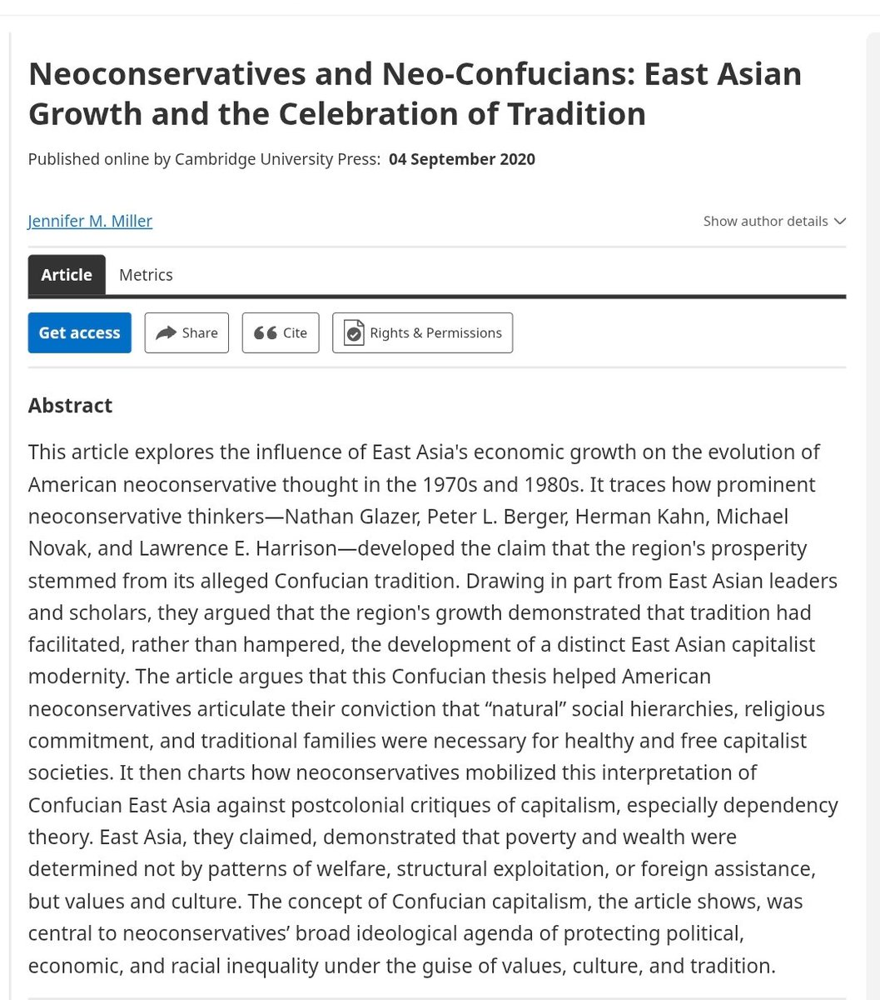

RT @liuzhao_cn: “儒家价值观”相当一部分是1970s后期美国新保守主义的发明（Herman Kahn、Thomas Metzger…），用以反驳第三世界主义（将结构性困境贬斥为文化不行）。华裔反共派所谓的美国儒学，则通过主动“自我东方化”内化和吸收了这套叙事发明…


“儒家价值观”相当一部分是1970s后期美国新保守主义的发明（Herman Kahn、Thomas Metzger…），用以反驳第三世界主义（将结构性困境贬斥为文化不行）。华裔反共派所谓的美国儒学，则通过主动“自我东方化”内化和吸收了这套叙事发明。在这个过程中，“文化差异”只不过是抹杀全球资本主义实质运作逻辑的谎言 https://t.co/2SQi2dVs0v https://t.co/V7wM6UhwMj